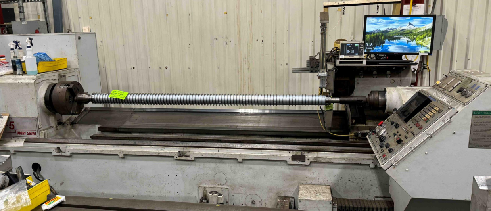
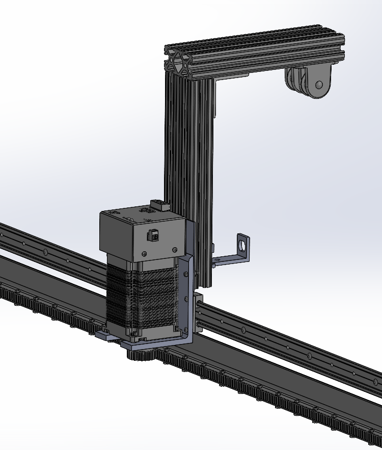
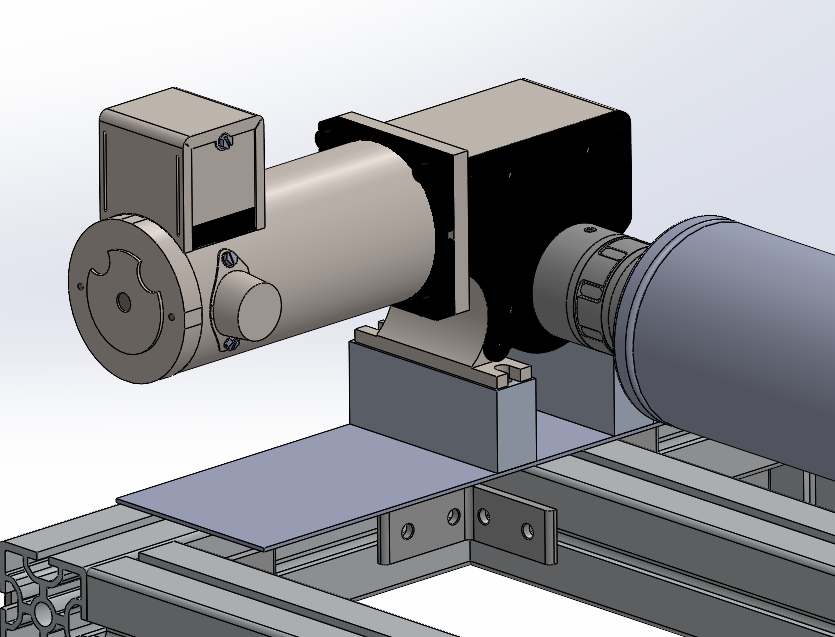
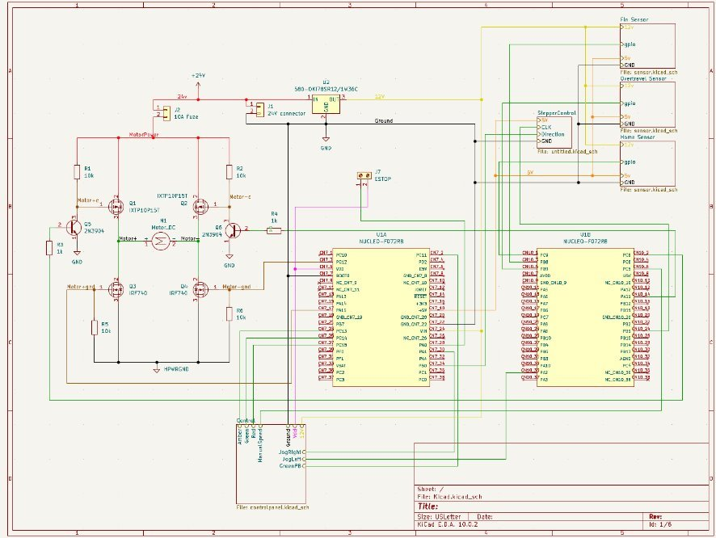
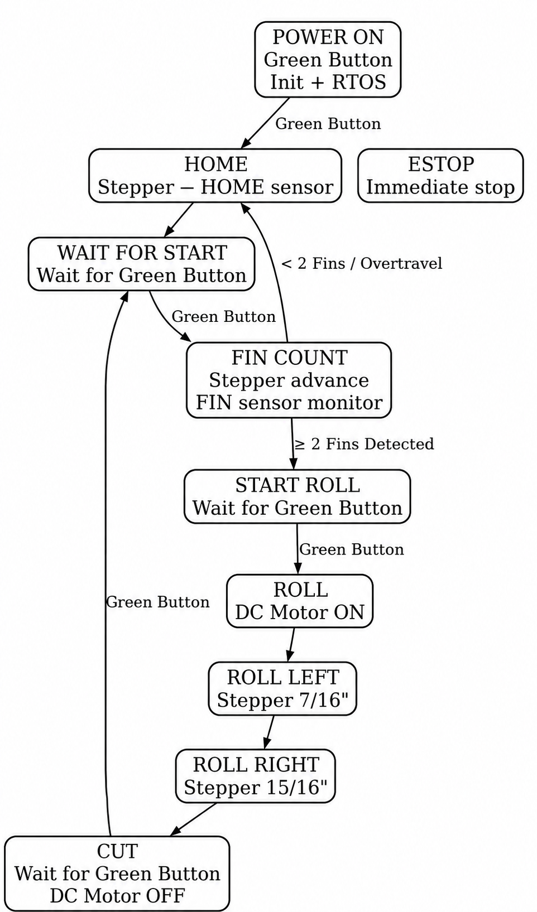

Project Goal
The project focused on creating an automated machine for wrapping Kevlar string around Hazelett backup rolls. The design improves control, repeatability, safety, and usability compared with the existing process.

Why the project was needed
- Old equipment had limited documentation.
- The current setup used a large footprint.
- Safety requirements needed to be improved.
- The wrapping process needed better control and repeatability.
- Operators needed a machine that was easier to use.
Project Parameters
The final design was guided by mechanical, electrical, safety, and operator-use requirements.
Automation
Automated traverse with locating sensors and automatic start.
Mobility
Mobile and ergonomically friendly frame design with caster wheels.
Containment
Drop containment was included to help protect the roll and surrounding equipment.
Mechanical Design
The mechanical system was split into three main subassemblies: the linear traverse, backup roll fixturing, and the frame structure / Kevlar cart.



| Subassembly | Main components | Purpose |
|---|---|---|
| Linear Traverse | Rack and pinion, stepper motor, linear slide, routing head, fin sensor, cat track, control panel. | Moves the Kevlar routing head along the roll during wrapping. |
| Backup Roll Fixturing | DC gearmotor, custom mount, shaft coupling, sliding pillow block, roll mounting adapter. | Supports and rotates the magnetic backup roll. |
| Table / Cart Structure | 60×60 mm aluminum extrusion, compatible brackets, caster wheels, lower Kevlar storage. | Provides a strong, adjustable, mobile base for the machine. |
Electrical Design
The electrical system used a custom board layout to control the motors and simplify wiring. The STM32 was connected through header pins for repairability, while the motor driver section used wider traces for high-power paths.


Power
A 12 V regulator powers the STM32, with 3.3 V and 5 V sourced from the STM32.
Motor Driver
The motor driver is included on the board, with 3.5 mm traces for high-power paths.
ESTOP
The ESTOP circuit is separate from the board and stops all motion until power is cycled and the ESTOP is released.
Programming and Controls
The program uses FreeRTOS for simultaneous stepper and DC motor control. Motion is handled with a state machine, and external interrupts are used for the overtravel sensor and ESTOP.
Control approach
- FreeRTOS for simultaneous tasks.
- State machine control for operation sequence.
- External interrupts for overtravel and ESTOP events.
- ESTOP interrupt immediately stops all motion.

BOM and Schedule
The project BOM totaled $5,732.25. The original GANTT chart was used more as a general reference than a strict schedule because part acquisition, PCB design delays, and changing project factors affected the timeline.

Future Improvements
Automation
Automate string cutting and automate string adherent.
Structure
Use a welded steel frame for a more permanent industrial version.
Wiring
Improve wire harness organization and serviceability.
Wrapping Capacity
Add the ability to wrap up to four fins at a time.
Testing
Test each completed section earlier to catch problems sooner.
Documentation
Keep the design easier to troubleshoot, repair, and update.
Lessons Learned
Standardization
Parts and hardware should use one standard of measurement when possible. Mixing sizes and specs made the project harder to assemble and manage.
Order Parts Early
Parts should be ordered early so there is more time for troubleshooting and final assembly.
Plan More Troubleshooting Time
More issues showed up near the end of the project, so extra troubleshooting time would have helped.
Test Earlier
Testing smaller sections as they were completed would have helped find problems sooner and make the final assembly smoother.